Pinar del RíoArtemisaLa HabanaMayabequeMatanzasCienfuegosVilla ClaraSancti SpíritusCiego de ÁvilaCamagüeyLas TunasHolguínGranmaSantiago de CubaGuantánamoIsla de la JuventudPinar del RíoArtemisaLa HabanaMayabequeMatanzasCienfuegosVilla ClaraSancti SpíritusCiego de ÁvilaCamagüeyLas TunasHolguínGranmaSantiago de CubaGuantánamoIsla de la Juventud
El tamaño
Cuba, a escala uno a uno.
110 471 km² de tierra
Un metro del juego es un metro de Cuba. La isla grande mide 1 127 km de punta a punta, y están también la Isla de la Juventud y los cayos grandes. Los cuadros amarillos son los mapas de otros juegos de manejo, a la misma escala y puestos sobre La Habana. Pasa el dedo o el ratón por la tabla.
Juego
Mapa
Área
Cuba es
Contravía
Cuba a escala real
110 471 km²
—
Lo justo es decirlo: esos mapas están hechos a mano, metro a metro. Este se genera a partir de datos abiertos y reglas por zona. Gana en extensión y en verdad (cada calle está donde está), no en detalle por kilómetro. La mayor parte de la isla es campo, igual que en la realidad.
Sales del faro del Cabo de San Antonio, cruzas Pinar entre mogotes, entras a La Habana por el Malecón y sigues al este: Matanzas, Santa Clara, Camagüey, Holguín, Santiago, la Farola hasta Baracoa y el último faro en Maisí. Cada pueblo está donde está y cada calle tiene su nombre.
🚗
Cabo de San Antonioel faro del oeste
Pinar del Río
La Habanael Malecón
Matanzas
Santa Clara
Camagüey
Holguín
Santiagolas lomas
Baracoala Farola
Punta de Maisíel faro del este
Así se ve hoy
Capturas del juego, tal como está.
Nada de esto es un dibujo: son pantallas de la versión 0.2 con la calidad gráfica al máximo, «Ultra». Los colores de las fachadas, los árboles, la luz y el tiempo los pone el juego.
La bahía de La Habana La entrada de la bahía y el Malecón, desde La Cabaña, a las cinco y media de la tarde.Neptuno El sol se pone al fondo de la calle Neptuno, en Centro Habana.El Capitolio El Capitolio y el Parque Central a las nueve y media de la mañana.El Prado Un aguacero de septiembre en el Paseo del Prado.Trinidad Los techos de colores de Trinidad a las cinco y media de la tarde.Cienfuegos La puesta de sol sobre la bahía, desde Punta Gorda.El Malecón Las fachadas del Malecón vistas desde el mar, al caer la tarde.Santiago de Cuba El centro de Santiago, con la Sierra Maestra al fondo.Varadero La playa de Varadero, desde el mar.Viñales Las lomas de Viñales a las ocho de la mañana.La ciudad desde arriba La Habana desde 180 metros sobre el Castillo del Príncipe.El Garaje Escoge tu carro: almendrones, rusos, moscovitas, guaguas, camiones y bicis.
Capturas reales de la demo técnica, noviembre de 2026. Toca una para verla grande.
Qué hay
Lo que ya anda.
La isla no está vacía. Esto es lo que la demo ya hace, cada cosa con su captura.
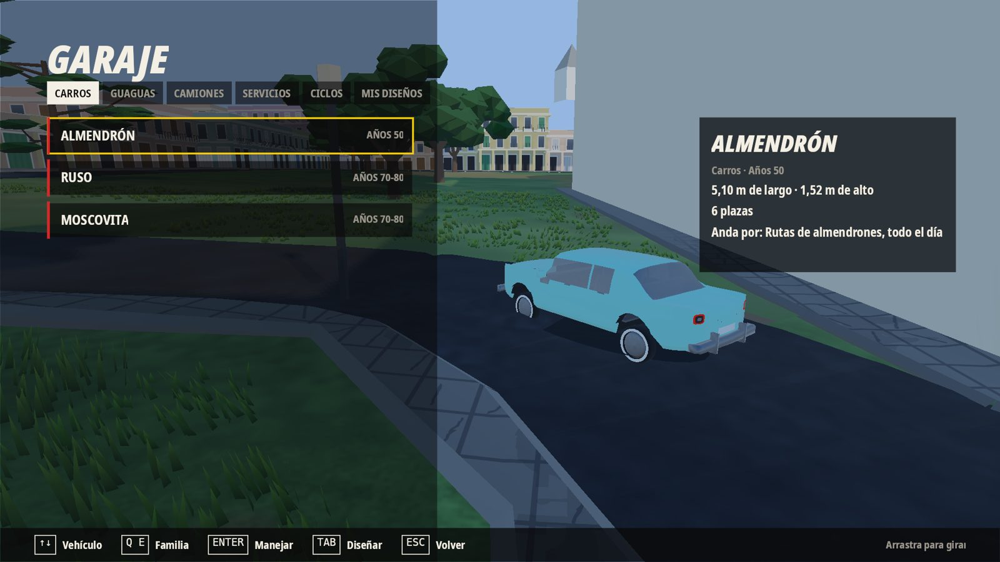
El Garaje
Diez tipos de vehículo de cuatro épocas: almendrones de los cincuenta, carros soviéticos de los ochenta, carros de hoy, guaguas, camiones, motos, triciclos, bicitaxis, patrullas y bomberos.
Cada uno se puede ajustar (largo, techo, ruedas, colores) y guardarse para manejarlo.
10 tipos23 familias4 épocas
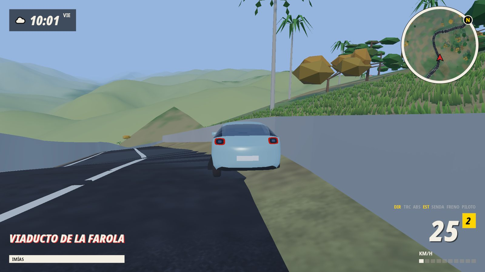
Manejo de verdad
Física de ruedas, motor, caja de velocidades y frenos, calculada 120 veces por segundo. Los carros pesan, las guaguas no doblan como un Lada.
La «Ayuda al manejo» va del 0, casi piloto automático, al 5, sin ayuda.
120 Hz6 niveles de ayudapuentes y túneles
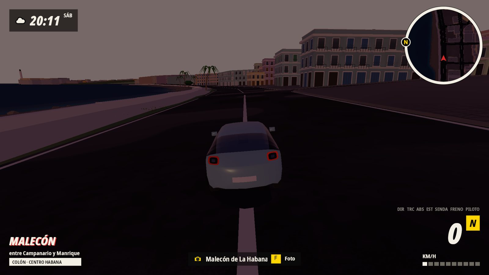
El cielo de Cuba
El sol, la luna, los planetas y las estrellas salen donde y cuando salen en Cuba. El clima sale de un modelo aprendido de datos reales de La Habana: los aguaceros de verano por la tarde, los frentes fríos en invierno.
Fecha y hora realesClima de ERA5
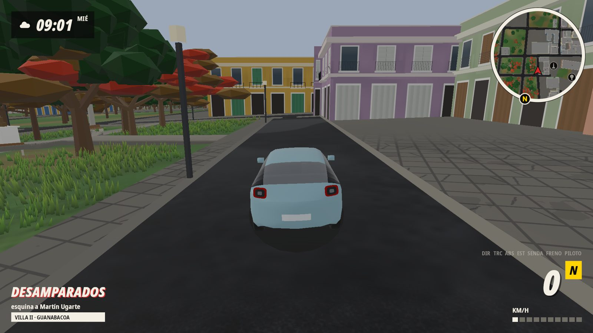
Árboles que cambian
Cada árbol tiene su especie según la zona. Florecen en su mes, cambian de hojas y algunos se quedan pelados en la seca. La yerba se mueve con el viento y se aparta cuando pasa el carro.
1,5 M árbolesespecies por zonaestaciones
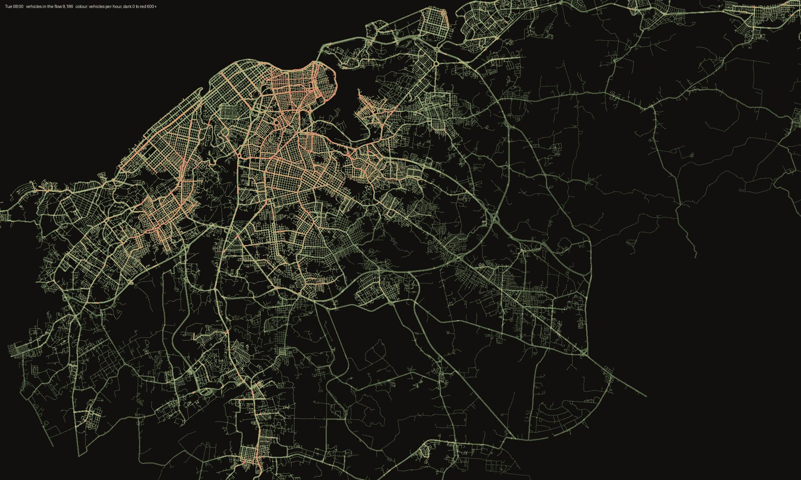
Tráfico con horario
La cantidad de carros sigue las horas pico de La Habana, de 7 a 9 y de 4 a 6, calculada de la población y los viajes por persona. De madrugada las calles quedan casi vacías. La mezcla de almendrones, guaguas, motos y triciclos cambia con la hora.
Simulado por provinciahora pico
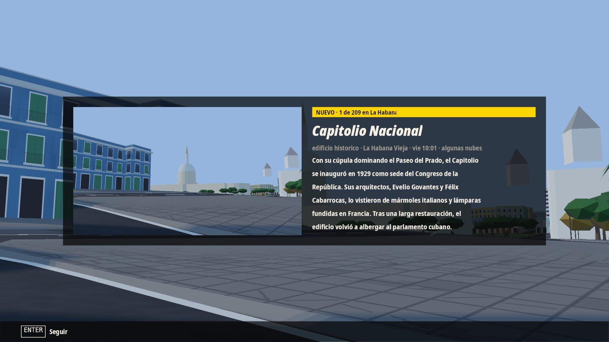
Fotos y álbum
750 lugares de toda la isla para fotografiar: monumentos, iglesias, faros, plazas. Encuadra bien, dispara y el lugar entra en tu álbum con su tarjeta.
750 lugares16 provincias
El mapa
De la isla a la esquina.
El mapa es la misma isla que manejas. Baja hasta ver los techos a 100 m o sube hasta ver Cuba entera, sin pantalla de carga. Marca un punto, pulsa Enter y el carro aparece ahí. Los lugares tienen su icono y, de lejos, se juntan por municipio.
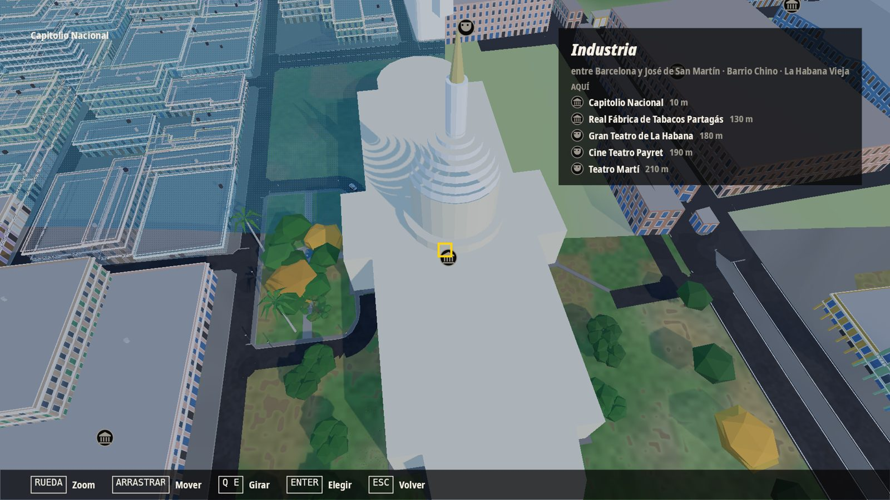
100 m
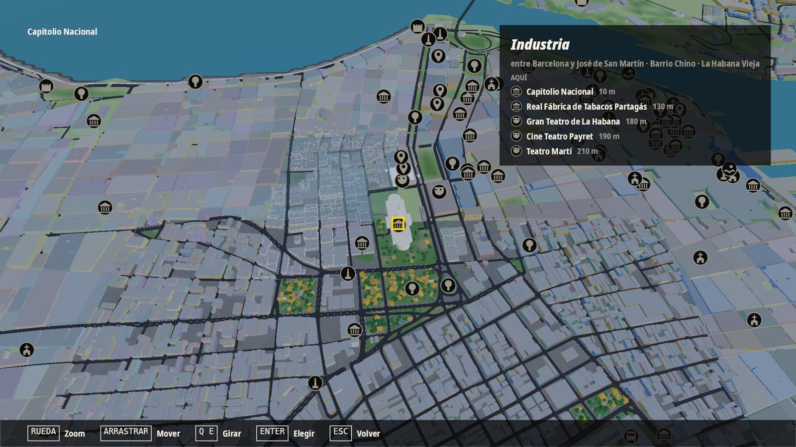
1 km
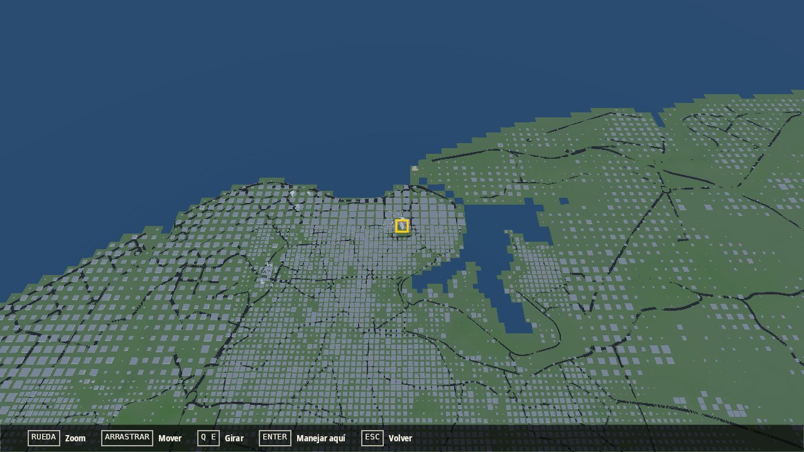
7 km
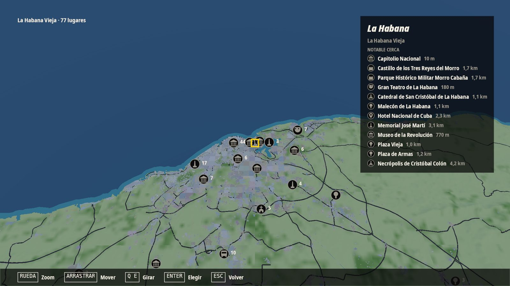
30 km
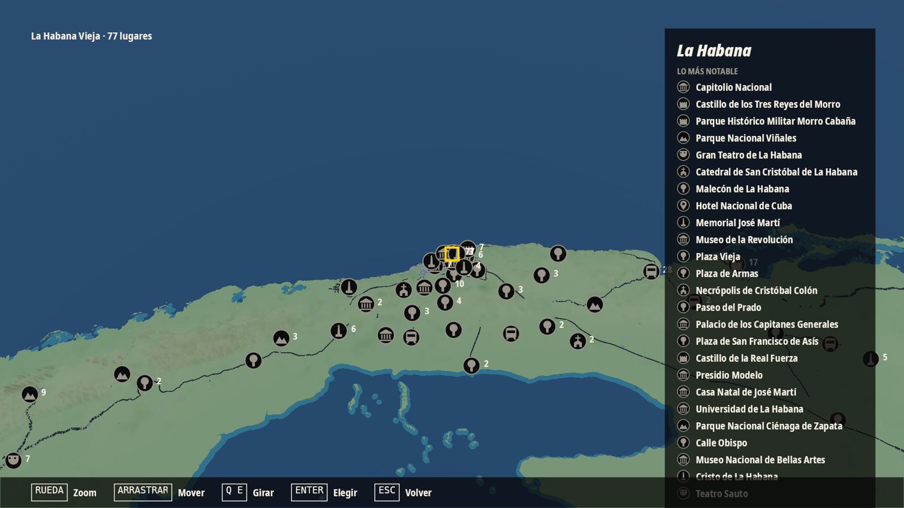
150 km
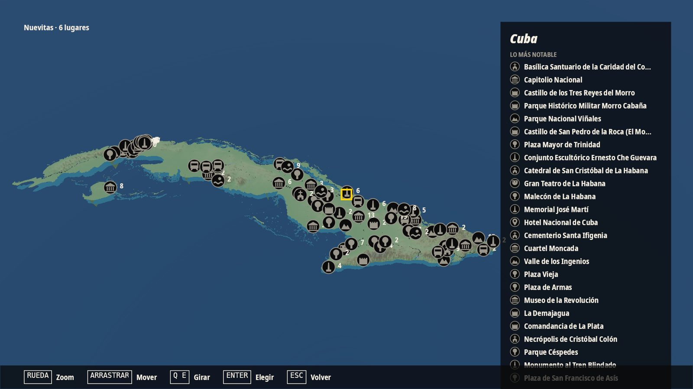
Cuba entera
Cómo se hace
Nadie dibujó esta Cuba.
Ninguna calle está modelada a mano. El juego lee datos abiertos y unas reglas por zona, y arma cada pedazo de 200 m cuando el carro se acerca.
Los datos
Calles, edificios y lugares de OpenStreetMap; el relieve del satélite Copernicus; la cobertura del suelo de ESA WorldCover.
Las reglas
Cada zona tiene las suyas: casas coloniales en La Habana Vieja, edificios altos en el Vedado, casas de una planta en los pueblos.
Las celdas
La isla se parte en 1,6 millones de cuadros de 200 m. Cada uno se arma al acercarte y es siempre igual.
Tu PC
La primera vez el juego construye la isla en tu máquina, en unos 20 minutos en una PC potente. Después no necesita internet.
Hacia dónde va
Cuba de hoy, con el sol de frente.
Las ilustraciones del cartel dicen lo que el juego quiere ser: almendrones y Ladas, triciclos eléctricos, metroguaguas llenas, motos con sidecar, la parada de la Plaza y las calles de noche.
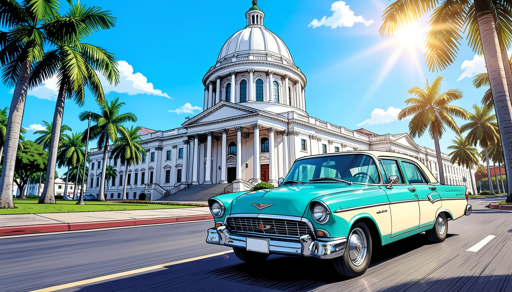
El Capitolio, kilómetro cero.¿Pa' dónde vas?Trinidad, adoquín y campanario.El triciclo de la esquina.Moto eléctrica entre colores.Santiago, loma arriba.La parada de la Plaza.
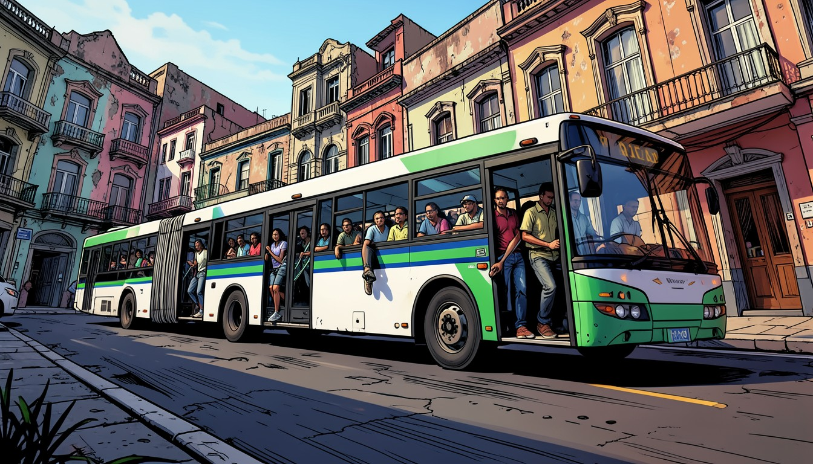
La metroguagua, hasta la puerta.
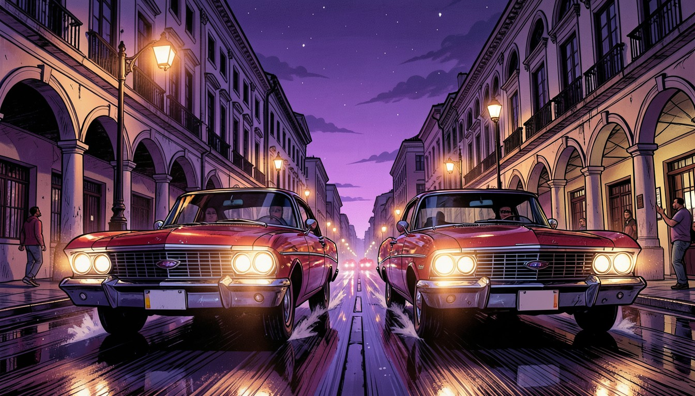
De noche, cara a cara.
Para que nadie se embulle de más
Todavía es una demo técnica.
La isla está, las calles están y el carro anda. Lo demás se está haciendo, y ya puedes descargarla y probar lo que hay.
Ya se puede
Manejar por cualquier calle de las 16 provincias.
Escoger y ajustar tu carro en el Garaje.
Fotografiar 750 lugares y llenar el álbum.
Manejar a cualquier hora y con cualquier tiempo.
Saltar a cualquier punto desde el mapa.
Falta
La historia y sus misiones.
La gente en las aceras y en las paradas.
Los lugares famosos modelados a mano.
Más detalle en el campo: bohíos, cementerios, pueblos.
Lo que viene
El camino hasta la 1.0, y después.
Esto es lo que falta, en el orden en que lo vamos a hacer. No hay fechas: cada etapa sale cuando está lista. Y nada de esto se va a cobrar: son mecánicas y contenido del juego.
1 · En curso
Que se maneje como Cuba
Fachadas con cornisas, balcones y portales; los lugares famosos modelados a partir de fotos; choques y daños; el tiempo al volante y mando de consola.
2
El primer pasaje
Empieza el juego: botear en almendrón por pesos, la PNR y las persecuciones, varios personajes, el teléfono, misiones y partidas guardadas. El primer capítulo de la historia, en La Habana.
3
La Habana 1.0
La historia de La Habana completa y una ciudad viva: gente en las aceras según la hora, tráfico por zona, apagones por barrio, radio y noticias, piques, el taller, motos con sidecar, fiestas y temporadas.
4
La Carretera Central
La historia sale de La Habana hacia otras ciudades, cada una con sus edificios, sus lugares y sus capítulos. Viajes largos en guagua, tren o avión.
5
Mar y aire
Lanchas en el mar, las bahías y los ríos; avionetas entre los aeropuertos de verdad; un globo sobre la ciudad.
Un solo archivo trae el juego y los datos de las 16 provincias. La primera vez que lo abres construye la isla en tu máquina: en una de 12 núcleos tomó 50 minutos, y al terminar ocupa unos 2 GB de disco. Después arranca directo.
Si Windows avisa que el programa no está firmado, toca «Más información» y «Ejecutar de todas formas».
En Linux
Descarga contravia.
Dale permiso de ejecución y ábrelo: chmod +x contravia y ./contravia.
Qué necesitas: Windows o Linux de 64 bits, una tarjeta gráfica con Vulkan, unos 4 GB de memoria libres para la primera construcción de la isla y unos 2 GB de disco. Por ahora no hay versión para Mac.
Contravía es gratis. La isla entera, la historia principal y todo lo que necesitas para jugarla no se van a cobrar nunca.
Gratis, siempre
Las 16 provincias y el modo libre.
La historia principal, completa hasta el final.
Los carros base, el garaje y el modo foto.
Toda mecánica nueva que tenga el juego.
La promesa
Nada de lo que hoy es gratis pasará a ser de pago.
La historia gratis no termina en «compra para ver el final».
¿Por qué gratis?
A Cuba la mapearon miles de voluntarios en OpenStreetMap, y su licencia obliga a que esos datos sigan abiertos para todos. El código está bajo la GPLv3: cualquiera puede descargarlo, compilarlo y repartirlo. Aunque quisiéramos cerrar el juego, no podríamos: la garantía de la promesa es la licencia, no nuestra palabra.
¿Cómo se mantiene?
Más adelante habrá contenidos extra, como mods y assets, que cualquiera podrá comprar y vender. Nunca serán mecánicas nuevas ni contenido esencial.
Cómo se juega
Escoge, arranca y a la calle.
En el menú, «Modo libre» te deja escoger dónde empezar, la hora, el tiempo y si hay tráfico. Desde ahí manejas por donde quieras: no hay paredes invisibles ni pantallas de carga entre provincias.
↑ / WAcelerar
↓ / SFrenar y dar marcha atrás
← → / A DDoblar
EspacioFreno de mano
RVolver a la calle más cercana
TSaltar a una calle cualquiera de la isla
FSacar la cámara y fotografiar un lugar cercano
LCambiar la ayuda al manejo
EscPausa: mapa, garaje, álbum y opciones
RatónMirar alrededor del carro
El mapa
Desde la pausa abres el mapa de Cuba: acércate con la rueda del ratón hasta ver las calles y escoge dónde caer.
El álbum
Hay 750 lugares para fotografiar. Cuando estés cerca de uno, su nombre sale abajo: toca F y saca la foto.
El código es abierto
Ayuda a hacerlo.
Contravía es software libre: el código está bajo la GPLv3 en GitHub. Cómo funciona por dentro está en la guía del desarrollador (en inglés, también en PDF). Cualquiera puede leerlo, arreglarlo y mejorarlo, y lo que entra es del juego común, gratis para todos.
Cuenta lo que falla
Una calle en el aire, un carro atravesando una casa, algo que no arranca: abre un issue con el lugar, lo que hiciste y una captura si puedes.
Arregla el mapa
Las calles, los edificios y los lugares salen de OpenStreetMap. Corrígelos allí: el juego reconstruye Cuba desde ese mapa, y el arreglo le sirve a todo el que lo usa.
Manda código, arte o datos
Haz un fork, cambia lo que quieras y abre un pull request. Firma cada commit con git commit -s. Lo que mandas entra con la licencia de la carpeta que tocas: lee CONTRIBUTING.md.
Haz un mod
Lo que distribuyes aparte del juego es un mod: sigue siendo tuyo y hasta puedes venderlo. MODS.md dice cómo.